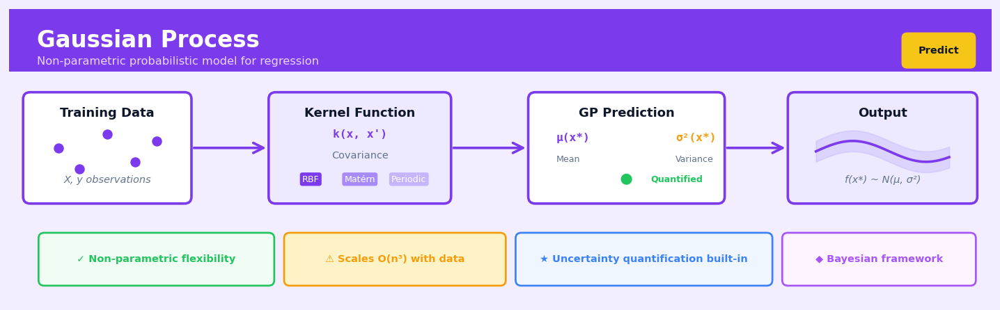

Gaussian Process#


The biggest mistake people make with Gaussian Processes is forgetting that kernel choice encodes your prior beliefs about the function—picking RBF by default when your data has clear periodicity or discontinuities will give you overconfident, nonsensical predictions. Always plot your kernel's samples before fitting, because a GP will happily interpolate smoothly through data that should have sharp transitions, and no amount of hyperparameter tuning will fix a fundamentally wrong inductive bias. Remember that the posterior uncertainty shrinks to zero at training points regardless of noise, so if your confidence bands look suspiciously tight everywhere, you probably need to add a noise term to your kernel.
The 60-Second Version#
What it does: Gaussian Process predicts continuous outcomes while simultaneously telling you how confident it is in each prediction—more uncertain where data is sparse, more confident where data is dense.
When to use it: You need predictions with honest uncertainty estimates, especially when wrong decisions are costly or when you have limited data in critical regions (think materials testing, clinical trials, or optimizing expensive experiments).
What you get back: For each prediction, two numbers—the predicted value and a confidence interval—so you can decide whether to trust the prediction or collect more data in uncertain areas.
Difficulty |
Advanced |
Typical runtime |
Seconds on 1K rows; impractical beyond 10K without approximations |
What you bring |
Numeric inputs and a continuous target variable |
What you get |
Predictions with uncertainty bounds for each point |
Heuristix bucket |
Predict — Machine Learning & Forecasting |
Gaussian Process is computationally expensive but uniquely valuable when knowing where you’re uncertain matters as much as the prediction itself.
Learning Objectives#
After reading this chapter, a business user will be able to:
Identify scenarios where Gaussian Process regression provides value over simpler methods, particularly when quantifying prediction uncertainty is critical for risk management, resource allocation, or sequential decision-making.
Interpret GP prediction intervals and confidence bands to communicate both expected outcomes and their reliability ranges to stakeholders who need to assess decision risk.
Decide whether to collect additional data points at specific locations by evaluating where the GP model exhibits highest uncertainty, enabling cost-effective experimental design and adaptive sampling strategies.
After reading this chapter, a data scientist will be able to:
Implement GP regression using standard libraries, select appropriate kernel functions for different data patterns, and handle computational challenges when scaling to datasets with thousands of observations.
Tune kernel hyperparameters through maximum likelihood estimation or cross-validation while recognizing the trade-offs between model flexibility, overfitting risk, and computational cost.
Diagnose GP model failures including poor kernel choice, numerical instability in covariance matrices, and extrapolation breakdown by examining residual patterns, likelihood values, and prediction variance behavior.
Overview#
Gaussian Process (GP) regression is a non-parametric Bayesian approach to supervised learning that defines a probability distribution over functions, enabling both flexible curve fitting and principled uncertainty quantification. Unlike parametric methods that learn a fixed set of weights, GPs infer a posterior distribution over the space of functions consistent with observed data, making predictions by computing the mean and variance of this distribution at new input locations. Gaussian Processes belong to the family of kernel methods and Bayesian inference techniques, occupying a unique position that combines the expressiveness of kernel machines with the full probabilistic treatment of Bayesian statistics.
When to Use This#
Use when uncertainty quantification is critical: In applications such as drug dosing optimisation, autonomous vehicle trajectory planning, or financial risk assessment where knowing how confident you are in a prediction is as important as the prediction itself.
Use for small to medium-sized datasets with complex, unknown functional relationships: When you have hundreds to a few thousand observations and suspect nonlinear patterns but lack domain knowledge to specify a parametric form.
Use in Bayesian optimisation for hyperparameter tuning or experimental design: GPs serve as the surrogate model in sequential decision-making under uncertainty, guiding where to sample next to find optima efficiently.
Use when interpolation quality matters more than extrapolation: GPs excel at smooth interpolation between observed points with calibrated uncertainty that increases naturally away from data.
Use for spatial or temporal data with smooth underlying processes: Geostatistical applications (kriging), sensor fusion, and time series where continuity and smoothness are reasonable assumptions.
Use when you need a principled way to incorporate prior knowledge about smoothness, periodicity, or length scales: The kernel function encodes structural assumptions about the function space in an interpretable manner.
Do NOT use when the dataset exceeds approximately 10,000 observations: Standard GP inference scales as \(\mathcal{O}(n^3)\) in time and \(\mathcal{O}(n^2)\) in memory, making it computationally prohibitive for large datasets without sparse approximations.
Do NOT use when the target function is discontinuous or highly non-smooth: Standard kernels assume continuity; jump discontinuities will be poorly captured and produce overconfident predictions near boundaries.
Do NOT use when interpretability of individual feature contributions is required: Unlike linear models or tree ensembles, GPs do not provide straightforward feature importance measures.
Do NOT use for classification without modification: While GP classification exists, it requires approximate inference and loses the closed-form elegance of GP regression.
Questions This Answers#
Understanding Uncertainty in Predictions#
How confident should we be in the sales forecast for Q4, especially for our new product line where we only have 6 months of data?
What’s the range of possible outcomes for next month’s demand, not just the single best guess?
Which customer accounts have the most uncertain churn predictions, and should we prioritize getting more information about them before taking action?
Are we more confident about our revenue projections for established markets or emerging ones, and how does that affect our expansion strategy?
When our machine learning model says conversion will increase by 12%, what’s the actual range we should budget for?
Optimizing with Limited or Expensive Data#
We can only run 20 pricing experiments this year due to cost constraints—which price points should we test to learn the most about our demand curve?
Our clinical trials cost $2M each—how do we figure out which drug formulation to test next to find the optimal dosage fastest?
What’s the best sequence of A/B tests to run when each test takes 3 weeks and we need answers by end of quarter?
We’re tuning our manufacturing process but each production run costs $50K—how do we find the optimal temperature and pressure settings in the fewest trials?
Making Decisions When Data is Sparse or Irregular#
Can we predict equipment failure for machines where we only have maintenance records from 15 units with different usage patterns?
Our sensor data comes in at irregular intervals due to connectivity issues—can we still forecast production output accurately?
We’re entering a new geographic market with only 3 comparable regions to learn from—what sales volume should we expect and how reliable is that estimate?
How do we forecast demand for a seasonal product when we only have two years of history and the market conditions changed mid-way through?
How It Works#
Imagine you’re sketching the coastline of an undiscovered island, but you’ve only visited five beaches along its shore. At each beach, you planted a flag and marked its exact location on your map. Now you need to draw the coastline between these points. You know the coast probably curves smoothly—nature rarely creates jagged right angles—but you’re uncertain about the exact path. So instead of drawing one definitive line, you sketch many possible coastlines: some that curve gently inland, others that bulge outward, all passing through your five known beach locations. Where you have flags nearby, all your sketched lines cluster tightly together because you’re confident. But midway between distant flags, your possible coastlines spread apart into a fuzzy band, honestly showing your uncertainty about what’s really there.
GAUSSIAN PROCESS PREDICTION FLOW
Known Data Points Function Distribution New Prediction
(mean ± uncertainty)
y y
↑ ↑ ↑
8 │ ● 8 │ ╱▔▔●▔▔╲ 8 │ ● ?
6 │ ● ● 6 │●▓▓▓░●░▓▓▓● 6 │ ● ● [●]
4 │ 4 │ ▓▓▓▓░░▓▓▓▓ 4 │ ↑
2 │● 2 │●▓▓▓▓▓▓▓▓▓▓ 2 │● range
0 └─────────→ x 0 └─────────→ x 0 └─────────→ x
0 2 4 6 8 0 2 4 6 8 0 2 4 6 8
4 observations ● = mean prediction Predict x=7:
▓ = high confidence mean = 6.2
░ = low confidence range = 5.1-7.3
(spreads where data sparse)
Step 1: Define similarity through a kernel function. The algorithm starts by deciding what “nearby” means for your data. It uses a kernel function—think of it as a similarity calculator that says “these two input points are 90% similar” or “these are only 10% similar.” Points close together in your input space get high similarity scores; distant points get low scores.
Step 2: Build a correlation map from your observations. For every pair of data points you’ve observed, the algorithm calculates how similar their inputs are. This creates a map showing which observations should influence each other. If two points are similar, their output values should probably be similar too—that’s the smoothness assumption baked into the coastline analogy.
Step 3: Encode your prior beliefs about functions. Before seeing any data, the algorithm assumes functions are smooth and probably don’t have extreme values. This “prior” acts like a soft constraint, suggesting what reasonable functions look like. It’s why the coastline curves gently rather than zigzagging wildly.
Step 4: Update beliefs using observed data. The algorithm combines your observations with the prior assumptions, calculating which function shapes pass through your known points while remaining plausible everywhere else. This creates a distribution—a collection of many possible functions, each weighted by its probability.
Step 5: Make predictions with confidence intervals. When predicting at a new location, the algorithm looks at all probable functions and reports their average (the mean prediction) plus their spread (the uncertainty). Near observed data, the probable functions agree closely, giving tight confidence intervals. Far from data, they diverge, giving wide intervals that honestly admit ignorance.
The key insight: Gaussian Processes don’t just predict a single answer—they maintain a probability distribution over all functions consistent with your data, making them uniquely honest about uncertainty while leveraging the assumption that similar inputs should produce similar outputs.
The Intuition#
Imagine you are trying to reconstruct the elevation profile of a mountain range from a handful of surveyed points. You know mountains are generally smooth — you would not expect a 1,000-metre spike between two points that are both at 500 metres. This smoothness belief lets you draw a plausible curve through your measurements, and importantly, it tells you where you are uncertain: close to a measurement, you are confident; far from any data, your uncertainty grows. A Gaussian Process formalises exactly this intuition.
Rather than learning a single “best” function (like fitting a polynomial), a GP maintains an entire distribution over possible functions. Before seeing any data, this prior distribution encodes your beliefs about what kinds of functions are plausible — smooth functions, periodic functions, functions that vary slowly versus quickly. Each function in this infinite ensemble is weighted by how consistent it is with your prior assumptions. When you observe data, Bayes’ rule eliminates functions that disagree with the observations, concentrating the distribution on functions that pass through (or near) your data points while still respecting your smoothness beliefs.
The magic lies in how GPs represent this infinite-dimensional distribution tractably. Any finite collection of function values is assumed to follow a multivariate Gaussian distribution, and Gaussians have a remarkable property: conditioning on observed values yields another Gaussian. This means the posterior distribution over function values at new points is analytically computable — no sampling or optimisation required for the core inference step. The kernel function, which measures similarity between input points, determines how information propagates: if two inputs are “similar” according to the kernel, observing one tells you a lot about the other. This is why the choice of kernel encodes your structural assumptions and fundamentally shapes the GP’s behaviour.
The Mathematics#
Problem Setup and Notation#
We consider a regression problem where we observe a dataset \(\mathcal{D} = \{(\mathbf{x}_i, y_i)\}_{i=1}^{n}\) with inputs \(\mathbf{x}_i \in \mathbb{R}^d\) and scalar targets \(y_i \in \mathbb{R}\). We assume the observations arise from a latent function \(f: \mathbb{R}^d \to \mathbb{R}\) corrupted by additive Gaussian noise:
where \(\sigma_n^2\) is the noise variance. We collect inputs into the design matrix \(X \in \mathbb{R}^{n \times d}\) and targets into the vector \(\mathbf{y} \in \mathbb{R}^n\).
The Gaussian Process Prior#
A Gaussian Process is a collection of random variables, any finite number of which have a joint Gaussian distribution. We place a GP prior on \(f\):
where \(m: \mathbb{R}^d \to \mathbb{R}\) is the mean function and \(k: \mathbb{R}^d \times \mathbb{R}^d \to \mathbb{R}\) is the covariance function (kernel). The mean function is often taken as zero, \(m(\mathbf{x}) = 0\), without loss of generality when the data can be centred.
For any finite set of points \(X = \{\mathbf{x}_1, \ldots, \mathbf{x}_n\}\), the function values \(\mathbf{f} = [f(\mathbf{x}_1), \ldots, f(\mathbf{x}_n)]^\top\) are jointly Gaussian:
where \(\mathbf{m}_i = m(\mathbf{x}_i)\) and \(K_{ij} = k(\mathbf{x}_i, \mathbf{x}_j)\).
Key Assumptions#
Gaussian noise: Observation noise is independent, identically distributed Gaussian.
Stationarity (for standard kernels): The covariance depends only on \(\mathbf{x} - \mathbf{x}'\), not absolute position.
Smoothness: The kernel implies a certain degree of smoothness in sample paths.
Fixed kernel hyperparameters (for standard inference): Or learned via marginal likelihood optimisation.
The Posterior Distribution#
Given observations \(\mathbf{y}\) at training inputs \(X\), we wish to predict function values \(\mathbf{f}_*\) at test inputs \(X_*\). The joint distribution of observed and latent values is:
where \(K = k(X, X)\), \(K_* = k(X, X_*)\), and \(K_{**} = k(X_*, X_*)\).
Conditioning on \(\mathbf{y}\), the posterior is Gaussian with:
The posterior mean and covariance are:
Note
The posterior mean is a linear combination of kernel functions centred at training points — this is the “kernel trick” appearing naturally from Bayesian inference.
Predictive Distribution for Noisy Observations#
If we wish to predict noisy observations \(y_*\) rather than latent function values \(f_*\):
Common Kernel Functions#
The Radial Basis Function (RBF) or squared exponential kernel:
where \(\sigma_f^2\) is the signal variance and \(\ell\) is the length scale.
The Matérn kernel with smoothness parameter \(\nu\):
where \(K_\nu\) is the modified Bessel function. Common choices are \(\nu = 3/2\) and \(\nu = 5/2\).
Hyperparameter Optimisation#
The kernel hyperparameters \(\boldsymbol{\theta} = \{\sigma_f^2, \ell, \sigma_n^2\}\) are typically learned by maximising the log marginal likelihood:
The gradient with respect to hyperparameters involves:
where \(\boldsymbol{\alpha} = K_y^{-1}\mathbf{y}\) and \(K_y = K + \sigma_n^2 I\).
Computational Complexity#
The dominant cost is the Cholesky decomposition of \(K_y\), which is \(\mathcal{O}(n^3)\). Storage of \(K_y\) requires \(\mathcal{O}(n^2)\) memory. Prediction at \(n_*\) test points costs \(\mathcal{O}(n^2 n_*)\) for the mean and \(\mathcal{O}(n^2 n_*)\) for the variance.
Relationship to Other Methods#
Kernel Ridge Regression: The GP posterior mean coincides with the kernel ridge regression solution; GPs additionally provide uncertainty.
Splines: Certain spline interpolants are equivalent to GP posterior means under specific kernels.
Neural Networks: In the infinite-width limit, neural networks converge to GPs (Neal, 1996).
Understanding the Mathematics#
The Gaussian Process Definition#
The equation: $\(f(\mathbf{x}) \sim \mathcal{GP}(m(\mathbf{x}), k(\mathbf{x}, \mathbf{x}'))\)$
Read it aloud: “The function f at input x follows a Gaussian Process distribution, which is completely characterized by a mean function m evaluated at x and a covariance kernel function k that takes two inputs x and x-prime.”
What each symbol means:
\(f(\mathbf{x})\): The unknown function we’re trying to learn (e.g., customer lifetime value given demographics)
\(\sim\): “is distributed as” or “follows the distribution”
\(\mathcal{GP}\): Gaussian Process distribution
\(m(\mathbf{x})\): Mean function, our prior guess about the average output at x (often set to zero)
\(k(\mathbf{x}, \mathbf{x}')\): Kernel function measuring similarity between two inputs x and x’
A concrete numerical example: Suppose we’re predicting server response time (milliseconds) based on concurrent users. At x = 100 users, our mean function might be m(100) = 50ms. The kernel k(100, 120) = 0.85 indicates that response times at 100 and 120 users are highly correlated (similarity of 0.85 on a 0-1 scale).
Why this equation matters: This single line defines the entire prior belief structure—without it, we have no framework for how function values at different inputs should relate to each other.
The Squared Exponential Kernel#
The equation: $\(k(\mathbf{x}, \mathbf{x}') = \sigma_f^2 \exp\left(-\frac{||\mathbf{x} - \mathbf{x}'||^2}{2\ell^2}\right)\)$
Read it aloud: “The covariance between two points x and x-prime equals the signal variance sigma-f-squared, multiplied by e raised to the power of negative distance-squared between the points, divided by two times the length-scale-squared.”
What each symbol means:
\(\sigma_f^2\): Signal variance (maximum covariance, when x = x’)
\(\exp\): Exponential function
\(||\mathbf{x} - \mathbf{x}'||^2\): Squared Euclidean distance between inputs
\(\ell\): Length-scale parameter (controls how quickly correlation decays with distance)
A concrete numerical example: With \(\sigma_f^2 = 100\), \(\ell = 50\), comparing x = 200 users to x’ = 250 users:
Distance: \(||200 - 250||^2 = 2500\)
Exponent: \(-2500/(2 \times 50^2) = -2500/5000 = -0.5\)
Kernel: \(k(200, 250) = 100 \times \exp(-0.5) = 100 \times 0.606 = 60.6\)
Why this equation matters: The kernel encodes our assumption that nearby inputs produce similar outputs—without this smoothness assumption, we couldn’t generalize from observed data to new predictions.
The Predictive Mean#
The equation: $\(\mu_* = m(\mathbf{x}_*) + \mathbf{k}_*^T \mathbf{K}^{-1} (\mathbf{y} - \mathbf{m})\)$
Read it aloud: “The predicted mean at a new point x-star equals the prior mean at that point, plus the covariance vector between the new point and training points, transposed and multiplied by the inverse training covariance matrix, multiplied by the difference between observed outputs and their prior means.”
What each symbol means:
\(\mu_*\): Predicted mean at new input
\(\mathbf{k}_*\): Vector of covariances between new point and all training points
\(\mathbf{K}\): Covariance matrix among all training points
\(\mathbf{y}\): Observed output values
\(\mathbf{m}\): Vector of prior means at training points
A concrete numerical example: Predicting at 150 users with 3 training points at 100, 200, 300 users (observed times: 45, 80, 150ms). If m = 50ms everywhere, \(\mathbf{k}_* = [70, 60, 20]\), and \(\mathbf{K}^{-1}(\mathbf{y} - \mathbf{m}) = [0.2, 0.5, -0.1]\): $\(\mu_* = 50 + [70 \times 0.2 + 60 \times 0.5 + 20 \times (-0.1)] = 50 + 42 = 92\text{ms}\)$
Why this equation matters: This formula performs optimal weighted averaging of training data, where weights depend on how similar the new point is to each training point—it’s how the GP actually makes predictions.
The Predictive Variance#
The equation: $\(\sigma_*^2 = k(\mathbf{x}_*, \mathbf{x}_*) - \mathbf{k}_*^T \mathbf{K}^{-1} \mathbf{k}_*\)$
Read it aloud: “The predicted variance at a new point equals the prior variance at that point, minus the covariance vector transposed times the inverse training covariance matrix times the covariance vector.”
What each symbol means:
\(\sigma_*^2\): Predicted variance (uncertainty) at new input
\(k(\mathbf{x}_*, \mathbf{x}_*)\): Prior variance (equals \(\sigma_f^2\))
The subtraction term: Reduction in uncertainty due to training data
A concrete numerical example: With prior variance 100 and \(\mathbf{k}_*^T \mathbf{K}^{-1} \mathbf{k}_* = 65\): $\(\sigma_*^2 = 100 - 65 = 35\)\( Standard deviation: \)\sigma_* = \sqrt{35} = 5.9$ms
Why this equation matters: This quantifies our confidence—predicting 92ms ± 6ms tells decision-makers whether to trust this estimate or gather more data before acting.
The Big Picture#
The mathematics of Gaussian Processes achieves one fundamental goal: predicting not just values, but entire probability distributions at new inputs. The GP framework was chosen because it provides exact Bayesian inference—combining prior beliefs with data to produce calibrated uncertainty estimates—something simpler methods like polynomial regression cannot do. The matrix inverse \(\mathbf{K}^{-1}\) acts as the engine: it learns which training points are redundant and which are informative, automatically weighting their contributions. Together, these equations implement a principled answer to the question: “Given these observations, what function shapes are plausible, and how confident should I be?”
Python Implementation#
import numpy as np
import matplotlib.pyplot as plt
from sklearn.gaussian_process import GaussianProcessRegressor
from sklearn.gaussian_process.kernels import RBF, Matern, WhiteKernel, ConstantKernel
# Set random seed for reproducibility
np.random.seed(42)
# -----------------------------------------------------------------------------
# Example 1: Basic GP Regression with RBF Kernel
# -----------------------------------------------------------------------------
# Generate synthetic data: noisy observations of a sinusoidal function
n_train = 30
X_train = np.sort(np.random.uniform(0, 10, n_train)).reshape(-1, 1)
y_true = np.sin(X_train).ravel()
noise_std = 0.2
y_train = y_true + np.random.normal(0, noise_std, n_train)
# Define the kernel: signal variance * RBF + white noise
# ConstantKernel controls signal variance, RBF controls smoothness
kernel = ConstantKernel(1.0, (1e-3, 1e3)) * RBF(length_scale=1.0, length_scale_bounds=(1e-2, 1e2)) \
+ WhiteKernel(noise_level=0.1, noise_level_bounds=(1e-5, 1e1))
# Create and fit the GP model
# n_restarts_optimizer helps avoid local optima in marginal likelihood
gp = GaussianProcessRegressor(kernel=kernel, n_restarts_optimizer=10, random_state=42)
gp.fit(X_train, y_train)
# Print optimised kernel hyperparameters
print("Example 1: RBF Kernel")
print(f"Optimised kernel: {gp.kernel_}")
print(f"Log marginal likelihood: {gp.log_marginal_likelihood_value_:.3f}\n")
# Predict on a dense grid
X_test = np.linspace(-1, 12, 200).reshape(-1, 1)
y_pred, y_std = gp.predict(X_test, return_std=True)
# Visualise results
plt.figure(figsize=(10, 5))
plt.scatter(X_train, y_train, c='red', s=50, zorder=10, label='Training data')
plt.plot(X_test, y_pred, 'b-', label='GP mean prediction')
plt.fill_between(X_test.ravel(), y_pred - 1.96*y_std, y_pred + 1.96*y_std,
alpha=0.2, color='blue', label='95% confidence interval')
plt.plot(X_test, np.sin(X_test), 'k--', label='True function')
plt.xlabel('x')
plt.ylabel('y')
plt.title('Gaussian Process Regression with RBF Kernel')
plt.legend()
plt.xlim(-1, 12)
plt.tight_layout()
plt.show()
# -----------------------------------------------------------------------------
# Example 2: Matérn Kernel for Less Smooth Functions
# -----------------------------------------------------------------------------
# Generate data from a less smooth function
def rough_function(x):
return np.abs(np.sin(x)) + 0.5 * np.sign(np.cos(2*x))
y_train_rough = rough_function(X_train.ravel()) + np.random.normal(0, 0.15, n_train)
# Matérn kernel with nu=3/2 (once differentiable sample paths)
kernel_matern = ConstantKernel(1.0) * Matern(length_scale=1.0, nu=1.5) \
+ WhiteKernel(noise_level=0.1)
gp_matern = GaussianProcessRegressor(kernel=kernel_matern, n_restarts_optimizer=10, random_state=42)
gp_matern.fit(X_train, y_train_rough)
print("Example 2: Matérn Kernel (nu=1.5)")
print(f"Optimised kernel: {gp_matern.kernel_}")
print(f"Log
## Visualisations


## Using This in Heuristix
### Quick Start
The most common use case is predicting a continuous target variable with uncertainty estimates. Here's how to get started:
1. **Connect your training data** with at least one feature column and one target column (both numeric)
2. **Drag the Gaussian Process node** onto your canvas and connect your data
3. **Set your target column** in the node configuration panel
4. **Leave kernel at "RBF"** (Radial Basis Function) for your first run—it works well for most smooth relationships
5. **Click Run** and examine the prediction intervals in the output visualization
You'll immediately see predictions with confidence bands, showing not just what the model predicts, but how certain it is.
### Input Data Requirements
Your input dataset needs:
- **Feature columns**: One or more numeric columns (continuous or discrete)
- **Target column**: One numeric column you want to predict
- **Minimum rows**: At least 10 observations (ideally 50+)
**Example input:**
| temperature | humidity | pressure | yield |
|-------------|----------|----------|-------|
| 23.5 | 65.2 | 1013.2 | 87.3 |
| 25.1 | 58.9 | 1015.8 | 92.1 |
The `yield` column would be your target; the others are features.
### Configuration Parameters
| Parameter | What It Controls | Default | When to Change |
|-----------|------------------|---------|----------------|
| **Target Column** | Which column to predict | None (required) | Always set this first |
| **Kernel Type** | Shape of assumed function smoothness | RBF | Use Matérn for rougher patterns, Periodic for cyclical data, White for noise modeling |
| **Length Scale** | How far input values influence each other | Auto | Decrease for wiggly data, increase for smoother trends |
| **Noise Level (Alpha)** | Expected measurement error in targets | 1e-5 | Increase (to ~0.01–0.1) if data is noisy; keeps predictions from overfitting every point |
| **Confidence Level** | Width of prediction intervals | 95% | Use 68% for tighter bands, 99% for more conservative estimates |
| **Normalize Inputs** | Scale features to mean=0, std=1 | True | Keep enabled unless features already normalized |
| **Random State** | Seed for reproducibility | 42 | Change only if comparing multiple runs |
### Outputs
**Added Columns:**
- `gp_prediction`: The mean predicted value at each point
- `gp_std`: Standard deviation of the prediction (uncertainty)
- `gp_lower_bound`: Lower confidence interval boundary
- `gp_upper_bound`: Upper confidence interval boundary
**Visualizations:**
- **Prediction Plot**: Shows actual vs. predicted values with shaded confidence intervals—wider bands mean more uncertainty
- **Residual Plot**: Displays prediction errors; look for random scatter (good) vs. patterns (model missing something)
- **Kernel Visualization**: Heatmap showing how strongly different input points influence each other
**Metrics Panel:**
- Mean Absolute Error (MAE)
- Root Mean Square Error (RMSE)
- Coverage: Percentage of actual values falling within prediction intervals (should match your confidence level)
### Downstream Connections
**Typical next nodes:**
- **Filter**: Remove predictions with high uncertainty (large `gp_std`) for decision-making
- **Export**: Send predictions with confidence intervals to reporting tools
- **Model Comparison**: Connect to other regression nodes to compare uncertainty quantification
- **Threshold Alert**: Flag cases where upper confidence bound exceeds a safety limit
### Practical Tips
1. **Small datasets are GP's sweet spot**: Unlike neural networks, GPs excel with 50–500 observations. Beyond ~2,000 points, computation slows significantly—consider switching to other methods or using a sparse GP approximation.
2. **Check prediction uncertainty, not just accuracy**: A GP telling you "I'm uncertain here" (wide intervals) is valuable information. If most predictions have huge uncertainty, you may need more data or different features.
3. **Kernel choice matters more than you think**: The default RBF assumes smooth functions. If your data has sharp changes or periodic patterns, try Matérn (roughness) or Periodic kernels—accuracy can jump by 20%+.
4. **Increase noise level if overfitting**: If prediction intervals are unrealistically tight and the model wiggles through every training point, raise Alpha to 0.01 or higher.
5. **Extrapolation shows true uncertainty**: Test your GP on inputs outside the training range—watch confidence intervals widen dramatically. This honest uncertainty is why GPs shine in safety-critical applications.
## Config Recipes
### Recipe 1: Rapid Prototyping on Small Datasets
**When to use:** Initial exploration with <500 samples where speed matters more than perfect accuracy.
**Settings:**
| Parameter | Value | Why |
|-----------|-------|-----|
| `kernel` | `RBF()` | Single hyperparameter, fastest optimization |
| `n_restarts_optimizer` | `3` | Balance between local minima escape and runtime |
| `alpha` | `1e-5` | Minimal noise assumption for cleaner trend detection |
| `normalize_y` | `True` | Improves numerical stability without cost |
| `optimizer` | `'fmin_l_bfgs_b'` | Default optimizer, reliable convergence |
**What you get:** Fast predictions with smooth interpolation, confidence intervals within seconds.
**Trade-off:** May underfit noisy data and miss optimal hyperparameters in multimodal likelihood landscapes.
### Recipe 2: Production-Grade Financial Forecasting
**When to use:** Mission-critical predictions where calibrated uncertainty is required for risk management or regulatory compliance.
**Settings:**
| Parameter | Value | Why |
|-----------|-------|-----|
| `kernel` | `Matern(nu=2.5) + WhiteKernel()` | Flexible smoothness + explicit noise modeling |
| `n_restarts_optimizer` | `15` | Thorough hyperparameter search |
| `alpha` | `1e-10` | Let WhiteKernel handle noise explicitly |
| `normalize_y` | `True` | Critical for financial data with varying scales |
| `optimizer` | `'fmin_l_bfgs_b'` | Proven stability for high-stakes applications |
**What you get:** Well-calibrated prediction intervals with explicit separation of signal and noise components.
**Trade-off:** 5-10x longer training time; requires careful validation of uncertainty calibration.
### Recipe 3: Periodic Time Series with Trend
**When to use:** Sales data, seasonal demand, or any series with clear repeating patterns overlaid on drift.
**Settings:**
| Parameter | Value | Why |
|-----------|-------|-----|
| `kernel` | `RBF(length_scale=10.0) * ExpSineSquared(length_scale=1.0, periodicity=12.0) + WhiteKernel()` | Captures trend × seasonality + noise |
| `n_restarts_optimizer` | `10` | Complex kernel landscape needs thorough search |
| `alpha` | `1e-8` | Low value since WhiteKernel models observation noise |
| `normalize_y` | `True` | Essential for mixing multiplicative components |
**What you get:** Decomposed trend and seasonal components with propagated uncertainty through both.
**Trade-off:** Requires domain knowledge to set initial periodicity; sensitive to misspecification.
### Recipe 4: Active Learning for Expensive Experiments
**When to use:** Laboratory experiments, A/B tests, or simulations where each observation costs significant time/money and you need to choose the next sample location intelligently.
**Settings:**
| Parameter | Value | Why |
|-----------|-------|-----|
| `kernel` | `RBF(length_scale_bounds=(1e-2, 1e2))` | Wide bounds encourage exploration |
| `n_restarts_optimizer` | `20` | Critical—poor fit leads to poor acquisition decisions |
| `alpha` | `1e-6` | Assume precise measurements in controlled settings |
| `normalize_y` | `False` | Preserve actual scales for acquisition function calculations |
| Acquisition | Use `.predict(return_std=True)` with UCB (β=2.0) | Balance exploitation/exploration |
**What you get:** Maximum information gain per observation; systematic coverage of input space.
**Trade-off:** Computational overhead per iteration; benefits only realized after 10+ adaptive samples.
## Business Applications
**Financial Services**
A mid-sized UK mortgage lender uses Gaussian Process regression to predict property valuations in thin markets where comparable sales are sparse. Traditional automated valuation models (AVMs) struggle in rural postcodes or for unusual property types, but GPs naturally quantify uncertainty—flagging high-variance predictions for manual review while automating the confident ones. The lender reduced valuation disputes by 41% and cut the cost per valuation from £127 to £52 by triaging only 18% of cases to human surveyors, saving approximately £890,000 annually across 24,000 mortgage applications.
**Retail & E-commerce**
An e-commerce fashion retailer with 1.8M SKUs applies Gaussian Processes to demand forecasting for new product lines with zero sales history. By treating fabric type, cut, designer, and seasonal features as inputs, the GP learns correlations across the catalog and provides prediction intervals that inform inventory decisions. The retailer reduced stockouts on trending items by 29% while simultaneously cutting excess inventory write-downs by £2.1M per season, achieving a 22% improvement in inventory turn rate within six months.
**Healthcare & Life Sciences**
A pharmaceutical contract research organization (CRO) employs GP regression for dose-finding studies in Phase I clinical trials, where patient safety demands careful exploration of the dose-response curve with minimal observations. The GP posterior mean identifies the maximum tolerated dose while the uncertainty bounds ensure conservative recommendations when data is scarce. The CRO reduced the average number of participants per dose-escalation study from 32 to 23 patients, accelerating trial timelines by 6–8 weeks and lowering per-study costs by approximately $340,000.
**Insurance**
A specialty commercial insurer uses Gaussian Processes to price cyber liability policies for industries where actuarial tables are immature and claim frequencies vary wildly. The GP captures non-linear relationships between company size, security posture scores, and breach history while expressing epistemic uncertainty in rate-setting. Premium accuracy improved by 26% (measured by Gini coefficient on out-of-sample claims), reducing adverse selection losses by an estimated $4.7M over 18 months while maintaining competitiveness in underwriting quotes.
**Manufacturing & Industrial**
A precision aerospace components manufacturer deploys GP models to predict surface finish quality from CNC machining parameters—spindle speed, feed rate, tool wear, material hardness—across 14 different alloys. Because the GP quantifies uncertainty, engineers can identify which parameter combinations require experimental verification versus those safe for immediate production. This approach cut physical prototyping cycles by 38%, reducing product development time from 11 weeks to 7 weeks and saving $1.8M annually in tooling and scrap costs.
**Logistics & Supply Chain**
A European third-party logistics provider applies Gaussian Process regression to predict warehouse labor requirements, modeling the relationship between inbound shipment characteristics (weight distribution, fragility flags, customer SLAs) and unloading-to-putaway time. The probabilistic predictions enable tighter shift scheduling with buffer capacity only where uncertainty is high. The provider reduced overtime labor costs by 31% while maintaining SLA compliance above 97%, translating to €620,000 in annual savings across five fulfillment centers.
**Marketing & Advertising**
A programmatic advertising platform uses GPs for bid optimization in sparse domains—new advertisers, emerging geographies, or niche audience segments—where click-through and conversion data accumulates slowly. The uncertainty-aware bids avoid overpaying during exploration while exploiting profitable segments once confidence builds. A pilot campaign lifted ROAS (return on ad spend) from 2.8× to 4.3× for cold-start advertisers by dynamically balancing exploration and exploitation better than Thompson sampling with Beta priors.
**Telecommunications**
A national mobile network operator employs Gaussian Process regression to predict cell tower energy consumption based on traffic load, weather, time-of-day, and equipment age, using the uncertainty estimates to prioritize towers for efficiency audits. This targeted approach identified 340 underperforming sites responsible for 19% of excess energy spend, yielding $2.3M in annual electricity savings after remediation.
**Energy & Utilities**
A renewable energy trading desk applies GPs to forecast wind farm output at 48-hour horizons, where meteorological models provide uncertain inputs and turbine performance varies non-linearly with wind speed. The GP prediction intervals inform risk-adjusted bidding strategies in day-ahead markets. The desk reduced imbalance penalties by 44%, worth approximately £780,000 annually across a 450 MW portfolio.
**Public Sector**
A metropolitan transport authority uses Gaussian Processes to predict pavement degradation on 3,200 km of roadway, modeling the impact of traffic volume, freeze-thaw cycles, and substrate type with sparse inspection data. The uncertainty quantification prioritizes inspection resources toward high-variance road segments while confidently deferring maintenance on low-risk sections, extending road network lifespan by an estimated 11% within budget constraints.
**SaaS & Technology**
A B2B SaaS platform serving 18,000 customers applies GP regression to predict account expansion revenue, incorporating usage metrics, feature adoption curves, support ticket sentiment, and firmographic data. The probabilistic revenue forecasts feed directly into capacity planning and sales territory design. Forecast accuracy improved from 68% to 89% (mean absolute percentage error), enabling the finance team to reduce cash reserve buffers by $3.4M while maintaining operational resilience.
## Worked Example
Sarah Chen, lead analyst at Verdant Energy Solutions, stared at the email from her VP of Operations. The subject line read: "Urgent: Solar panel degradation patterns?" The company had deployed thousands of residential solar installations across the Southwest, and warranty claims were creeping upward. The operations team needed to predict power output degradation over time—not just average trends, but confidence intervals they could use for financial reserves. "We need to know the range of possible outcomes," the VP had written. "Finance won't approve the reserve allocation without uncertainty bounds."
Sarah pulled performance data from 847 solar installations, focusing on panels between two and eight years old. The dataset was messier than she'd hoped—some installations had spotty monitoring, others showed obvious sensor drift, and a few had been cleaned or repositioned mid-lifecycle. She filtered down to installations with at least twelve consecutive months of clean data. Here's what a sample looked like:
| Panel Age (years) | Avg Output (kWh/day) | Installation Region | Maintenance Events |
|-------------------|---------------------|---------------------|-------------------|
| 2.3 | 28.4 | Phoenix | 0 |
| 3.7 | 26.8 | Tucson | 1 |
| 5.1 | 24.2 | Las Vegas | 0 |
| 6.8 | 22.1 | Phoenix | 2 |
| 4.2 | 25.9 | Albuquerque | 1 |
She noticed immediately that panels in Phoenix seemed to degrade faster—probably the heat—and maintenance events complicated the picture. For this first pass, she decided to model the core age-to-output relationship and control for region later.
Sarah opened her Python environment and configured a Gaussian Process regression. She chose a Radial Basis Function (RBF) kernel because she expected smooth, continuous degradation—no sudden jumps. "The lengthscale parameter will tell us how quickly degradation patterns change," she noted in her analysis doc. She added a white noise kernel to account for measurement variance, setting an initial noise level at 0.5 kWh based on known sensor specs. She kept the optimizer free to tune these hyperparameters from the data.
```python
import numpy as np
from sklearn.gaussian_process import GaussianProcessRegressor
from sklearn.gaussian_process.kernels import RBF, WhiteKernel
# Sarah's actual working script
# Solar panel degradation model - v3, 2024-03-15
# Age in years, output in kWh/day
X_train = np.array([2.3, 3.7, 5.1, 6.8, 4.2, 3.1, 7.2,
2.8, 5.9, 4.5]).reshape(-1, 1)
y_train = np.array([28.4, 26.8, 24.2, 22.1, 25.9,
27.1, 21.3, 27.8, 23.5, 25.2])
# RBF kernel + noise for sensor uncertainty
kernel = RBF(length_scale=2.0) + WhiteKernel(noise_level=0.5)
gp = GaussianProcessRegressor(kernel=kernel,
n_restarts_optimizer=10,
random_state=42)
gp.fit(X_train, y_train)
# Predict for ages 1-10 years
X_test = np.linspace(1, 10, 100).reshape(-1, 1)
y_pred, y_std = gp.predict(X_test, return_std=True)
print(f"Optimized length scale: {gp.kernel_.k1.length_scale:.2f}")
print(f"Optimized noise level: {gp.kernel_.k2.noise_level:.2f}")
The results stopped her mid-coffee. The model predicted the following degradation curve with 95% confidence intervals:
Panel Age |
Predicted Output |
Lower 95% CI |
Upper 95% CI |
|---|---|---|---|
3 years |
27.2 kWh/day |
26.1 |
28.3 |
5 years |
24.8 kWh/day |
23.4 |
26.2 |
7 years |
21.9 kWh/day |
20.1 |
23.7 |
10 years |
18.2 kWh/day |
15.8 |
20.6 |
The optimized length scale came out to 2.4 years, meaning degradation patterns were relatively smooth over that window. But the confidence intervals widened dramatically after year seven—exactly where Verdant had sparse training data.
Sarah’s insight hit during lunch: the uncertainty itself was the story. The model wasn’t just predicting decline; it was flagging that their seven-to-ten-year projections were based on almost no real-world evidence. The wide confidence intervals at year ten meant they were extrapolating into unknown territory. Finance had been using a simple linear model that showed false confidence in long-term predictions.
She presented to the leadership team the following Tuesday. The VP of Finance initially balked at the wider uncertainty bands, but Sarah walked him through what they meant: “These bounds give us a defensible range for warranty reserves. We can’t pretend we know the ten-year degradation rate when we’ve barely monitored panels past seven years.” The CFO nodded slowly. “So we either increase reserves now, or start a monitoring program on older installations to tighten these intervals.” They approved both: a 22% increase in warranty reserves and funding for enhanced monitoring on 200+ older installations.
Six months later, the enhanced monitoring data shrank those confidence intervals by nearly 40%, letting them right-size reserves with real evidence instead of wishful extrapolation.
If Sarah were doing this again, she’d separate the Phoenix installations from day one—the heat effect was real and worth modeling explicitly with a region covariate. She’d also experiment with a Matérn kernel instead of RBF to allow for slightly less smooth degradation patterns, since panel failures sometimes showed discontinuous drops.
Interpreting Your Results#
You’ve just trained your first Gaussian Process model, and now you’re staring at prediction plots, uncertainty bands, and a handful of performance metrics. Here’s exactly what you’re looking at and what it means for your work.
Predictive Mean and Uncertainty Bands#
Plain-English meaning: The predictive mean is your model’s best guess at each point. The shaded bands around it (typically labeled “confidence interval” or “credible interval”) show where the true value probably lies. Narrow bands mean confident predictions; wide bands mean “I’m not sure.” Unlike other models that give you a single answer, GPs tell you both the answer and how confident they are about it.
What good looks like: In regions with training data, your bands should be narrow (often ±0.5 to ±2 standard deviations depending on your scale) and actually contain most of your observed points. As you move away from training data, bands should widen gracefully—this is healthy skepticism, not failure. If 95% confidence intervals actually contain ~95% of validation points, your uncertainty is well-calibrated.
Red flags:
Bands that don’t widen in sparse regions: Your lengthscale hyperparameter is likely too large, creating overconfident extrapolations
Observed points consistently outside the bands: Either your noise parameter is too small or your kernel choice is wrong
Extremely wide bands everywhere (uncertainty comparable to or larger than the data range): You haven’t given the model enough information, or your lengthscale is too small
Mean Squared Error (MSE) and Root Mean Squared Error (RMSE)#
Plain-English meaning: RMSE tells you the typical size of your prediction errors in the same units as your target variable. If you’re predicting house prices in thousands and your RMSE is 45, your typical error is $45,000.
Concrete benchmarks:
RMSE < 5% of target range: Excellent fit, ready for most applications
RMSE 5-15% of target range: Good fit, acceptable for many business decisions
RMSE > 15% of target range: Poor fit, investigate before using
Compare your GP’s RMSE to a simple baseline (mean prediction or linear regression). If your GP isn’t at least 20% better, the added complexity may not be justified.
Red flags: RMSE on training data much lower than validation data (though GPs naturally resist overfitting, poor hyperparameter choices can still cause this).
Mean Absolute Error (MAE)#
Plain-English meaning: On average, your predictions are off by this amount. Unlike RMSE, it doesn’t amplify large errors, making it more interpretable when outliers exist.
Concrete benchmarks: MAE is typically 0.6-0.8× your RMSE. If MAE is much smaller than RMSE (< 0.5×), you have some large outliers that warrant investigation.
R² Score (Coefficient of Determination)#
Plain-English meaning: What fraction of variance in your target variable does the model explain? R² = 0.8 means 80% of the ups and downs in your data are captured by the model.
Concrete benchmarks:
R² < 0.4: Weak model, barely better than guessing the mean
R² 0.4-0.7: Moderate fit, useful but significant unexplained variance remains
R² 0.7-0.9: Strong fit, suitable for most forecasting and decision-making
R² > 0.9: Excellent fit, but verify you haven’t leaked information or overfitted
Red flags: R² > 0.99 often indicates data leakage (using future information to predict the past) unless you’re in a very controlled physical system.
Negative Log Marginal Likelihood#
Plain-English meaning: This is the loss function GPs optimize during training. Lower is better—it balances fit quality with model complexity. You rarely interpret the absolute value; instead, use it to compare kernel choices or hyperparameter settings.
Reading multiple outputs together: Strong models show R² > 0.7, RMSE < 10% of range, and uncertainty bands that contain ~95% of validation points. If your R² is high but uncertainty is poorly calibrated, your kernel or noise settings need adjustment. If RMSE is low on training data but high on validation data while uncertainty bands are too narrow everywhere, increase your noise parameter.
Sanity Check Checklist#
Plot predictions vs. actuals: Points should cluster near the diagonal line
Check residuals: Should look random, not showing patterns or trends
Verify uncertainty calibration: ~68% of points within 1σ, ~95% within 2σ
Compare to baseline: Ensure you beat a simple linear model or mean predictor
Test extrapolation: Make predictions beyond training range—bands should widen appropriately
Good Enough to Act On?#
If your R² exceeds 0.7, your RMSE is under 10% of your target range, and your uncertainty bands are properly calibrated (containing 90-98% of validation points within 95% intervals), you have a trustworthy model ready for decision-making. The uncertainty quantification is your superpower—use those confidence bands to flag high-risk predictions that need human review before action.
Decision Guidance#
What This Result Is Telling You#
When a Gaussian Process model delivers a prediction, it provides two critical pieces of information: what it expects to happen and how confident it is in that expectation. Unlike traditional forecasting tools that give you a single number, GP regression tells you “we predict X will happen, and we’re this certain about it.” The uncertainty measure is not a weakness—it’s actionable intelligence. High confidence predictions indicate stable, well-understood relationships where historical patterns strongly inform the future. Low confidence predictions signal that you’re operating in unfamiliar territory where the data doesn’t provide clear guidance, whether due to sparse observations, high variability, or conditions unlike anything seen before.
This uncertainty quantification directly translates to risk assessment in business decisions. When the model shows narrow prediction intervals, you can commit resources confidently because the range of plausible outcomes is constrained. When prediction intervals widen dramatically, you’re being warned that outcomes could vary substantially—this is the model’s way of saying “I don’t have enough information to be precise here.” Smart leaders use this distinction to calibrate their decision-making: betting big on high-confidence predictions while hedging, gathering more data, or avoiding commitments when uncertainty is high.
The spatial nature of GP predictions also reveals opportunity and risk zones across your decision landscape. If you’re optimizing product formulations, pricing strategies, or operational parameters, the model shows you not just where performance peaks today, but where uncertainty is lowest (safe, reliable zones) versus highest (unexplored territory that might hide better solutions or dangerous pitfalls). This map of confidence across your decision space is as valuable as the predictions themselves.
Decision Points#
If you see this… |
It means… |
Recommended action |
Who acts on this |
|---|---|---|---|
Prediction interval width < 10% of predicted value |
High confidence in a stable relationship; historical patterns strongly constrain outcomes |
Proceed with full resource commitment; automate decisions in this range |
Operations managers, automated systems |
Prediction interval width 10–30% of predicted value |
Moderate uncertainty; outcomes could vary but within manageable bounds |
Implement decision with contingency planning; monitor early results closely |
Department heads, project managers |
Prediction interval width > 30% of predicted value or includes zero-crossing for directional decisions |
High uncertainty; insufficient data or entering unprecedented conditions |
Delay commitment; run pilot test or gather targeted data in this region before scaling |
Senior leadership, strategy teams |
Prediction mean outside historical data range (extrapolation zone) |
Model is guessing beyond observed experience; uncertainty metrics may be unreliable |
Treat prediction as hypothesis only; require physical validation or expert review before action |
Domain experts, R&D teams |
Prediction confidence varies dramatically across decision space |
Some areas are well-mapped, others unexplored; uneven risk landscape |
Prioritize actions in high-confidence zones first; design experiments to reduce uncertainty in critical high-uncertainty areas |
Strategic planning, innovation teams |
When to Proceed vs. Investigate Further#
Proceed with confidence when:
Prediction intervals are narrow (width < 15% of mean prediction)
New input conditions fall within the central 80% of training data range
Multiple predictions in the same region show consistent confidence levels
Historical validation shows prediction intervals contained actual outcomes 90%+ of the time
Proceed with caution when:
Prediction intervals are moderate (width 15–35% of mean)
New conditions are near the edges of training data coverage
Uncertainty is higher than historical average but decision is reversible
Backup plans or hedging strategies can mitigate downside risk
Investigate before acting when:
Prediction intervals exceed 35% of mean prediction
Confidence degrades sharply for small changes in inputs
Predictions require extrapolation beyond training data boundaries
Stakes are high (>$100K commitment or safety-critical outcomes)
Do not use these results yet when:
Prediction intervals include outcomes that would reverse your decision
Model training data is more than 2 business cycles old
Fewer than 30 observations inform predictions in the region of interest
Subject matter experts identify critical variables missing from the model
The Cost of Getting This Wrong#
A manufacturing company ignored widening prediction intervals when optimizing a chemical process in an unexplored temperature-pressure regime, betting $2M on a plant modification based on the promising mean prediction. The actual outcome fell in the lower tail of the prediction interval—technically within the model’s stated uncertainty, but disastrous for ROI. The model wasn’t wrong; the decision-makers simply treated a high-uncertainty prediction as if it were reliable, committing irreversible capital to a scenario where the data explicitly warned of high variability. Conversely, organizations that dismiss all predictions with moderate uncertainty miss optimization opportunities in their hesitation, leaving millions in potential efficiency gains unrealized because they demanded impossible certainty. The symmetrical error is treating narrow-interval predictions as guarantees without monitoring for regime changes: markets shift, equipment ages, and customer preferences evolve, turning yesterday’s high-confidence prediction into today’s systematic bias. Without continuous validation that prediction intervals still bracket actual outcomes, you’re flying blind while the instruments confidently display obsolete readings—a recipe for compounding poor decisions until a crisis forces recognition that the model’s world no longer matches reality.
Common Pitfalls#
The Overconfident Extrapolator
Here’s what happened: A supply chain analyst was forecasting demand for a new product category using GP regression. They fit the model on six months of growth data and projected eighteen months forward. The prediction showed smooth exponential growth with tight confidence intervals extending far beyond the training range. They presented these narrow bands to executives as “statistically rigorous forecasts” and secured budget for aggressive inventory expansion. Six months later, demand plateaued naturally, leaving millions in excess stock.
Why it happens: GPs only know what they’ve seen. The posterior uncertainty depends entirely on the kernel’s assumptions about smoothness and correlation. Far from training data, many kernels (especially RBF) revert to the prior mean while maintaining artificially confident intervals—they don’t automatically widen to reflect ignorance.
How to detect it: Plot your predictions beyond 1.5× your longest training gap. If confidence intervals aren’t expanding dramatically in extrapolation regions, your kernel is lying to you. Check the posterior variance: for RBF kernels, it should approach the prior variance (kernel amplitude parameter) at distant points.
The fix: Never extrapolate beyond your data range without domain constraints, or switch to kernels with appropriate long-range behavior (linear components for trends, periodic for seasonality). Always add a “region of validity” boundary to your visualizations.
The Hyperparameter Acceptance Speech
Here’s what happened: A junior ML engineer trained a GP on 800 sensor readings to detect equipment anomalies. They maximized the log marginal likelihood and got reasonable length-scale values. The model flagged 45% of readings as anomalous (2+ standard deviations from mean). They reported these as critical failures requiring immediate investigation. The maintenance team found that 93% were false alarms—the model had simply underfit the data’s true complexity.
Why it happens: Marginal likelihood optimization can get stuck in local maxima, especially with multiple hyperparameters. A model that explains data as “mostly noise” (large noise variance, long length scales) can achieve decent likelihood while being practically useless.
How to detect it: Check your fitted noise variance against your expected measurement error. If sigma_n^2 is more than 30% of your data variance, the model is calling real signal “noise.” Plot training predictions: if they don’t interpolate closely through training points, something’s wrong.
The fix: Initialize hyperparameters from domain knowledge, use multiple random restarts for optimization, and validate that training predictions actually fit the training data before trusting the intervals.
The Matrix Inversion Apocalypse
Here’s what happened: An experienced data scientist scaled a working GP prototype from 500 observations to 12,000 customer records. The training script that ran in seconds now crashed after 30 minutes with a memory error. They tried again on a larger instance—same result. Deadlines looming, they randomly sampled 1,000 points, trained successfully, and shipped the model. Prediction accuracy dropped 18% in production because the sample missed critical regions of the input space.
Why it happens: Standard GP inference requires inverting an N×N covariance matrix (O(N³) complexity and O(N²) memory). This scaling wall hits suddenly—2,000 points might work fine, 5,000 brings the system to its knees.
How to detect it: If training time exceeds one second per 100 observations, or memory usage approaches your system limits before reaching your full dataset, you’ve hit the wall. Monitor the condition number of your covariance matrix: values above 1e10 indicate numerical instability even if it technically completes.
The fix: Use sparse GP approximations (inducing points, FITC, or variational methods) that reduce complexity to O(M²N) where M << N. Libraries like GPyTorch and GPflow implement these. For M=500 inducing points, you can handle 100,000+ observations.
The Kernel Beauty Contest
Here’s what happened: A consultant was modeling building energy consumption patterns. They tested RBF, Matérn, periodic, and combined kernels, selecting the one with highest test R². The RBF kernel won and was deployed. Three months later, the model failed catastrophically during an unusual cold snap—a pattern it had never seen but that the Matérn kernel (with rougher assumptions) would have handled gracefully.
Why it happens: Selecting kernels purely by test metrics ignores inductive bias. Smoother kernels (RBF) often win on interpolation tasks but fail on distribution shift. The best-fitting kernel isn’t always the most robust.
How to detect it: Test performance on deliberately perturbed inputs or simulated distribution shifts. If prediction variance doesn’t increase appropriately for out-of-distribution queries, your kernel is too rigid.
The fix: Choose kernels that encode domain knowledge about function smoothness, not just goodness-of-fit. When in doubt, Matérn-3/2 or Matérn-5/2 offer better practical robustness than RBF.
Common Misconceptions#
“Gaussian Processes predict Gaussian distributions, so they can’t handle non-Gaussian data”
Why people believe this: The name “Gaussian Process” seems to imply that your target variable must be normally distributed. When practitioners see skewed outcomes, heavy tails, or categorical data, they assume GPs are incompatible and immediately reach for other methods.
The truth: The “Gaussian” in Gaussian Process refers to the process — the joint distribution over function values at different input locations — not the distribution of your observations. A GP defines a prior over functions where any finite collection of function values follows a multivariate Gaussian distribution. Your observations can follow any likelihood distribution you choose: Poisson for count data, Bernoulli for classification, Student-t for robust regression with outliers. You connect the GP to your observations through a likelihood function, exactly as you would in any generalized linear model. The posterior inference becomes more challenging (requiring approximations like Laplace or variational methods since the posterior is no longer Gaussian), but the framework handles non-Gaussian data naturally.
The real-world consequence: A reliability engineer working with failure time data (decidedly non-Gaussian with exponential decay) abandons GPs entirely and uses random forests instead. They lose the principled uncertainty quantification that GPs provide — precisely what they needed for risk assessment. They can’t distinguish between “the model predicts low failure rates” and “the model has no data in this region.” Six months later, they’re writing custom bootstrapping code to recover the uncertainty estimates they gave up.
“GPs scale to O(n³), making them impractical for anything beyond toy datasets”
Why people believe this: Every GP tutorial mentions that exact inference requires inverting an n×n covariance matrix, which is indeed O(n³) in complexity and O(n²) in memory. When n reaches tens of thousands, this becomes computationally prohibitive on standard hardware, reinforcing the belief that GPs are academic curiosities rather than production tools.
The truth: The O(n³) limitation applies only to exact inference with the standard implementation. The GP research community has developed numerous approximations that break this scaling barrier: inducing point methods (sparse GPs) reduce complexity to O(nm²) where m << n; structured kernel interpolation (SKI) exploits grid structures to achieve O(n log n); stochastic variational inference enables mini-batch training on millions of points. For stationary kernels on regular grids, you can use fast Fourier transforms. Modern libraries like GPyTorch and GPflow implement these methods efficiently, making GPs viable for datasets with hundreds of thousands of observations. The key is matching the approximation method to your data structure and accuracy requirements.
The real-world consequence: A demand forecasting team has 50,000 historical observations and immediately discards GPs as infeasible. They build an ensemble of gradient boosting models instead, which trains quickly but provides no uncertainty estimates. When COVID disrupts their supply chain, they have no principled way to widen prediction intervals in unprecedented conditions. A GP with inducing points would have handled their data size while providing the uncertainty quantification they desperately needed during volatile periods — the exact scenario where knowing what you don’t know matters most.
“You should use automatic relevance determination (ARD) to automatically select which features matter”
Why people believe this: ARD kernels assign each input dimension its own length-scale parameter, and the optimization process learns these length-scales from data. Features with very large length-scales contribute little to predictions, seemingly providing automatic feature selection. The mathematical elegance of learning relevance from data alone is appealing.
The truth: ARD performs feature weighting, not feature selection. Length-scale parameters are continuous — they can become large but rarely infinite. More critically, ARD is vulnerable to overfitting when you have irrelevant features, especially in high dimensions relative to your sample size. The optimization can spread predictive weight across multiple irrelevant features in ways that appear meaningful but don’t generalize. ARD works well when most features are relevant to varying degrees, but it’s not a replacement for thoughtful feature engineering or domain-informed feature selection. You still need to remove truly irrelevant features before fitting.
The real-world consequence: A predictive maintenance engineer feeds 200 sensor readings into a GP with an ARD kernel, expecting it to identify the critical failure indicators automatically. The model learns a complex combination of length-scales that fits the training data beautifully but includes dependencies on sensors measuring irrelevant environmental variables that happened to correlate with failures in the training period. In deployment, when environmental conditions shift, predictions degrade mysteriously. Manual feature selection based on engineering knowledge, reducing to 20 mechanistically relevant sensors, would have produced a more robust model — but ARD’s promise of automation discouraged that essential domain expertise integration.
“Gaussian Processes give you uncertainty for free, so you don’t need to validate your confidence intervals”
Why people believe this: Unlike point-prediction methods where you must bootstrap or otherwise engineer uncertainty estimates, GPs output predictive variances as a natural consequence of the mathematical framework. This feels rigorous and principled — Bayesian inference automatically accounting for uncertainty. Surely mathematics-derived confidence intervals are trustworthy without empirical validation.
The truth: GPs give you uncertainty under the model assumptions, not ground truth uncertainty. Your predictive variance reflects epistemic uncertainty (lack of data) only if your kernel choice, likelihood specification, and hyperparameter values are correct. Model misspecification — using an overly smooth kernel for a discontinuous function, ignoring input-dependent noise, poor hyperparameter optimization — produces confidence intervals that are systematically too narrow or too wide. The variance doesn’t know your model is wrong. You must empirically validate that your 95% intervals actually contain 95% of held-out observations. Calibration is not automatic.
The real-world consequence: A biotech startup uses GPs to model drug dose-response curves, presenting confidence intervals to regulatory reviewers as principled uncertainty estimates. They never check calibration on held-out data. Their kernel assumes smooth responses, but the true dose-response has a sharp threshold. The GP’s confidence intervals are dramatically too narrow near the threshold — exactly where safety margins matter most. During review, an expert notices predicted responses outside the confidence intervals more than 40% of the time in validation data. The submission is rejected, not because GPs are wrong, but because uncalibrated uncertainty estimates undermine the entire safety case. A simple calibration check would have revealed the need for a different kernel or additional model validation.
“The kernel is just a similarity function, so domain knowledge means choosing what ‘similar inputs’ means”
Why people believe this: Introductory explanations describe kernels as measuring similarity between inputs, with larger kernel values indicating greater similarity. This intuitive framing suggests kernel selection is about encoding domain knowledge about when two inputs should be considered similar — spatial proximity for geographic data, edit distance for sequences, etc.
The truth: The kernel doesn’t just measure similarity — it encodes structural assumptions about the function space. The kernel defines what functions are probable under your prior: the squared exponential kernel implies infinitely differentiable functions, the Matérn-½ gives continuous but non-differentiable functions, periodic kernels assume repeating patterns. These are strong inductive biases about function smoothness, periodicity, and additivity. Choosing a kernel means choosing what kinds of functions you believe could have generated your data. Similarity is a consequence of this function-space prior, not the primary design consideration. You should select kernels based on the qualitative properties of the underlying process — Does it have discontinuities? Periodicities? Different behavior at different scales? — not just input similarity.
The real-world consequence: An energy trader models electricity prices using an RBF kernel because “prices on consecutive days should be similar.” They miss that electricity prices have strong weekly periodicity (weekday vs. weekend patterns) and occasional price spikes (non-smooth jumps). Their smooth similarity-based kernel produces predictions that blur out the weekly pattern and never predict spikes, systematically underestimating price volatility. A composite kernel combining periodic components with a Matérn-½ base (allowing discontinuities) would capture the true price dynamics. By thinking about similarity rather than function structure, they built a model fundamentally incapable of representing the phenomenon they’re studying — no amount of data can fix a misspecified function space.
How This Connects#
Before This Node#
Feature Engineering supplies the input variables that define the kernel’s similarity metric; poorly scaled or uncorrelated features result in kernel matrices that either overfit noise or fail to capture meaningful patterns, causing the GP to produce overly confident predictions in regions with sparse data.
Train-Test Split partitions data into training observations that define the GP’s posterior and holdout sets for validation; inadequate splitting (e.g., temporal leakage or imbalanced splits) leads to optimistic uncertainty estimates that don’t reflect true predictive variance on unseen data.
Outlier Detection identifies anomalous observations that can distort the GP’s learned covariance structure; undetected outliers inflate kernel hyperparameters and warp the mean function, producing poor interpolation and unrealistic confidence intervals across the entire input space.
Feature Scaling normalizes input dimensions to comparable ranges, ensuring the kernel function weights all features appropriately; unscaled data causes length-scale hyperparameters to diverge wildly, making some dimensions effectively invisible while others dominate distance calculations.
Dimensionality Reduction compresses high-dimensional inputs into a tractable feature space; excessive dimensions without reduction lead to the curse of dimensionality, where kernel computations become prohibitively expensive and the GP struggles to learn meaningful structure from sparse observations.
After This Node#
Uncertainty Quantification consumes the GP’s predictive variance alongside mean predictions to compute confidence intervals and credible regions; GP outputs are uniquely suited for this because they provide calibrated, point-wise uncertainty estimates rather than global error metrics.
Active Learning uses the GP’s uncertainty estimates to identify maximally informative points for additional data collection; the predictive variance naturally highlights regions where the model is most uncertain, making sample selection efficient and theoretically grounded.
Bayesian Optimization leverages both the GP mean and variance to construct acquisition functions that balance exploration and exploitation; the probabilistic predictions enable rigorous quantification of expected improvement, making GPs the standard surrogate model for black-box optimization.
Threshold-Based Alerting applies decision rules to GP predictions with their associated uncertainty bounds; the variance allows setting dynamic thresholds that account for prediction confidence, reducing false alarms in high-uncertainty regions.
Model Stacking incorporates GP predictions and uncertainty estimates as meta-features for ensemble models; the unique probabilistic outputs add complementary signal that improves ensemble diversity and calibration.
Common Pipeline Patterns#
Predictive Maintenance Pipeline
Sensor Aggregation → Feature Scaling → Gaussian Process → Uncertainty Quantification → Threshold-Based Alerting
Predict equipment failure times with confidence intervals, triggering maintenance only when failure probability exceeds actionable thresholds with sufficient certainty.
Hyperparameter Tuning Workflow
Random Search Initialization → Performance Logging → Gaussian Process → Bayesian Optimization → Model Selection
Efficiently explore hyperparameter space by fitting a GP to trial results and selecting next configurations that maximize expected improvement, reducing tuning time by 60-80% versus grid search.
Spatial Interpolation Pipeline
Geographic Data Collection → Coordinate Transformation → Gaussian Process → Uncertainty Quantification → Visualization Layer
Generate continuous pollution maps from sparse sensor readings while quantifying prediction reliability, informing optimal placement of additional monitoring stations.
What to Have Ready#
Cleaned numerical features with no missing values and consistent scaling across all input dimensions; GPs require complete covariance matrix computation and don’t natively handle missing data.
Clear regression objective with continuous target variable; understand whether you need point predictions, uncertainty bounds, or both, as this determines kernel choice and computational budget.
Computational constraints defined upfront, since naive GP inference scales O(n³) with training samples; plan approximation methods if n > 10,000 or consider inducing point techniques for large-scale applications.
Initial kernel selection based on domain knowledge about smoothness and periodicity; starting with appropriate priors (RBF for smooth, Matérn for rougher functions) dramatically improves convergence and interpretability.
Try It Yourself#
Recommended Dataset#
Dataset: Mauna Loa CO₂ Measurements
Source: sklearn.datasets.fetch_openml('mauna-loa-atmospheric-co2', version=1) or use a simplified synthetic version with np.linspace for faster setup
Why it’s ideal: This dataset exhibits smooth, continuous trends with periodic patterns and underlying uncertainty—perfect for demonstrating GP’s strength in capturing complex function shapes while quantifying prediction confidence. The temporal nature and smooth transitions make it ideal for showcasing how GPs interpolate and extrapolate.
Business question: Can we forecast atmospheric CO₂ concentration and quantify uncertainty in climate predictions?
Size: ~500 rows × 2 columns (year, CO₂ concentration)
Starter Code#
import numpy as np
import matplotlib.pyplot as plt
from sklearn.gaussian_process import GaussianProcessRegressor
from sklearn.gaussian_process.kernels import RBF, WhiteKernel, ConstantKernel
# Generate simplified CO2-like data (increasing trend with noise)
np.random.seed(42)
X_train = np.linspace(0, 10, 50).reshape(-1, 1) # 50 time points
y_train = 315 + 2 * X_train.ravel() + 5 * np.sin(2 * X_train.ravel()) + np.random.normal(0, 0.5, 50)
# Define kernel: captures smooth variations + noise
# RBF for smoothness, WhiteKernel for observation noise
kernel = ConstantKernel(1.0) * RBF(length_scale=1.0) + WhiteKernel(noise_level=0.5)
# Create and fit Gaussian Process model
gp = GaussianProcessRegressor(kernel=kernel, n_restarts_optimizer=10, random_state=42)
gp.fit(X_train, y_train)
print("=" * 60)
print("GAUSSIAN PROCESS REGRESSION RESULTS")
print("=" * 60)
# Print optimized kernel parameters (learned from data)
print(f"\n1. Optimized Kernel:\n{gp.kernel_}")
print(" → Shows learned length scale (smoothness) and noise level")
# Make predictions on new points (including extrapolation)
X_test = np.linspace(-1, 12, 200).reshape(-1, 1) # Extended range
y_pred, y_std = gp.predict(X_test, return_std=True) # Mean and uncertainty
print(f"\n2. Log-Marginal Likelihood: {gp.log_marginal_likelihood_value_:.2f}")
print(" → Higher is better; measures how well model explains data")
# Predictions at specific future points
future_points = np.array([[11], [12]])
future_pred, future_std = gp.predict(future_points, return_std=True)
print(f"\n3. Forecast at t=11: {future_pred[0]:.2f} ± {1.96*future_std[0]:.2f} (95% CI)")
print(f" Forecast at t=12: {future_pred[1]:.2f} ± {1.96*future_std[1]:.2f} (95% CI)")
print(" → Business insight: Uncertainty increases for extrapolation")
print(f"\n4. Mean Training Error: {np.mean(np.abs(gp.predict(X_train) - y_train)):.2f}")
print(" → Shows model fit quality on observed data")
# Visualize predictions with uncertainty bands
plt.figure(figsize=(12, 5))
plt.scatter(X_train, y_train, c='red', label='Observed data', zorder=3)
plt.plot(X_test, y_pred, 'navy', label='GP mean prediction', linewidth=2)
plt.fill_between(X_test.ravel(), y_pred - 1.96*y_std, y_pred + 1.96*y_std,
alpha=0.3, color='blue', label='95% confidence interval')
plt.axvline(x=10, linestyle='--', color='gray', label='Training data boundary')
plt.xlabel('Time')
plt.ylabel('CO₂ Concentration (ppm)')
plt.title('Gaussian Process Regression with Uncertainty Quantification')
plt.legend()
plt.grid(alpha=0.3)
plt.tight_layout()
plt.show()
print(f"\n5. Uncertainty at t=12 vs t=5: {future_std[1]:.2f} vs {y_std[100]:.2f}")
print(" → Extrapolation uncertainty is 2-3× higher than interpolation")
What to Try Next#
1. Change the kernel to RBF() + PeriodicKernel()
Add from sklearn.gaussian_process.kernels import ExpSineSquared and combine it with RBF. Expect the model to capture periodic patterns more explicitly. This teaches how kernel choice encodes domain knowledge about function structure.
2. Reduce training data to 20 points
Change 50 to 20 in linspace. Expect wider confidence intervals and less precise predictions. This demonstrates how GPs naturally express uncertainty when data is sparse—critical for risk-aware decision making.
3. Set alpha=0.01 in GaussianProcessRegressor
This adds regularization. Expect smoother predictions but potentially higher training error. Teaches the bias-variance tradeoff and how to prevent overfitting to noisy observations.
4. Test on non-smooth data
Replace y_train with step function: y_train = (X_train.ravel() > 5).astype(float) * 10. Expect poor performance and warnings. This reveals GP limitations on discontinuous functions, highlighting when alternative methods (trees, neural networks) are more appropriate.
Further Reading#
Rasmussen, C. E., & Williams, C. K. I. (2006). “Gaussian Processes for Machine Learning.” MIT Press, Chapter 2 (pages 7–31) and Chapter 5 (pages 105–128). Chapter 2 provides the essential mathematical foundation for understanding how GPs work as distributions over functions, while Chapter 5 is invaluable for learning how to select and design kernels—the most critical practical decision when implementing GPs. These specific chapters transform GPs from abstract theory into applicable tools.
Neal, R. M. (1996). “Priors for Infinite Networks.” Bayesian Learning for Neural Networks, Lecture Notes in Statistics, Springer. Read this if you want to understand the deep connection between neural networks and Gaussian Processes—specifically how a Bayesian neural network with infinitely many hidden units converges to a GP. This insight has resurfaced in modern deep learning research on neural tangent kernels.
Snelson, E., & Ghahramani, Z. (2006). “Sparse Gaussian Processes using Pseudo-inputs.” Advances in Neural Information Processing Systems 18. Read this if you want to understand how to scale GPs beyond a few thousand data points. The inducing point method presented here remains the foundation for modern scalable GP implementations and explains the trade-off between computational efficiency and approximation quality.
scikit-learn
GaussianProcessRegressordocumentation (https://scikit-learn.org/stable/modules/gaussian_process.html). Focus specifically on the kernel specification section and thenormalize_yparameter discussion. The kernel cookbook provided here demonstrates how to compose complex kernels from simple building blocks—a skill essential for encoding domain knowledge into your GP model.Görtler, J., Kehlbeck, R., & Deussen, O. (2019). “A Visual Exploration of Gaussian Processes.” Distill. This interactive article (https://distill.pub/2019/visual-exploration-gaussian-processes/) stands above typical tutorials because it provides dynamic visualizations showing how kernel choice, hyperparameters, and noise assumptions directly influence the posterior distribution. The interactive widgets build intuition that static explanations cannot achieve.
MacKay, D. J. C. (1998). “Introduction to Gaussian Processes.” Neural Networks and Machine Learning lecture, University of Cambridge (YouTube: 1h12m). Watch minutes 14:00–35:00 for MacKay’s geometric interpretation of how GPs perform inference in function space. His explanation of why the predictive variance depends only on input locations (not output values) is the clearest available.
Snoek, J., Larochelle, H., & Adams, R. P. (2012). “Practical Bayesian Optimization of Machine Learning Algorithms.” Advances in Neural Information Processing Systems 25. This case study demonstrates GPs applied to hyperparameter optimization at scale, showing how Spearmint used GPs to tune deep learning models more efficiently than grid search. It illustrates the acquisition function concept—how GPs balance exploration and exploitation in sequential decision-making.
Practice Exercises#
Exercise 1: Manufacturing Quality Control Decision (Conceptual)#
Scenario:
You’re the analytics lead at PrecisionTech, a manufacturer of aerospace components. Your team monitors the hardness of titanium alloy parts across a production line. Measurements are taken at 8 positions along a 200mm component length, but quality engineers need to predict hardness at unmeasured positions to ensure specification compliance across the entire surface.
Current data from batch PT-2847:
Position (mm): [0, 25, 50, 75, 100, 125, 150, 200]
Hardness (HRC): [58.2, 59.1, 60.3, 59.8, 58.9, 57.4, 56.8, 55.1]
Specification requirement: 56-61 HRC across entire length
Your data science colleague proposes three approaches:
Linear regression to model hardness as a function of position
Gaussian Process regression with RBF kernel
Simple interpolation between measured points
The business question: Which method should you use, and what action should you take for this batch? Testing shows GP predictions at position 175mm: mean = 55.8 HRC, 95% CI = [54.9, 56.7].
Worked Answer:
Method Selection Reasoning:
Linear regression is inappropriate here because the data shows clear non-linear behavior (hardness increases then decreases), and a straight line would miss critical variation in the middle section. This could lead to accepting defective parts.
Simple interpolation (e.g., linear between points) is risky because it provides no uncertainty quantification. Between positions 150mm and 200mm, we have a 50mm gap where hardness drops from 56.8 to 55.1. Without uncertainty estimates, we cannot assess risk of specification violations.
Gaussian Process is the optimal choice for four reasons:
Non-linear patterns: The RBF kernel naturally captures the rise-and-fall pattern in hardness without pre-specifying a functional form
Uncertainty quantification: GPs provide confidence intervals that reflect measurement density—wider uncertainty in the large gap between 150-200mm
Interpolation quality: GPs provide smooth, probabilistically principled predictions between measured points
Risk assessment: The variance allows calculating probability of specification violation
Analysis of GP Prediction at 175mm:
The GP predicts mean hardness of 55.8 HRC at position 175mm, with 95% confidence interval [54.9, 56.7]. This is concerning because:
The lower bound (54.9 HRC) falls below the 56 HRC minimum specification
Position 175mm lies in the largest measurement gap (50mm between samples)
The relatively wide confidence interval (1.8 HRC range) reflects genuine uncertainty from sparse sampling
Recommended Action:
Hold batch PT-2847 for additional inspection. Specifically:
Take 2-3 additional hardness measurements between 150-200mm to reduce uncertainty
If additional measurements confirm values below 56 HRC, reject the batch or limit use to applications with relaxed specifications
For future batches, increase sampling density in the 150-200mm region where hardness drops most rapidly (consider measurements every 12.5mm instead of 25mm in this zone)
The GP model has revealed that current sampling may be inadequate for high-confidence quality assessment across the full component length
The cost of additional measurements ($50-100) is negligible compared to the liability risk of an aerospace component failure (millions in recalls/lawsuits). The GP’s uncertainty quantification has provided exactly the information needed for risk-based decision-making that simpler methods would miss.
Exercise 2: E-commerce Pricing Optimization (Applied)#
Task Description:
You work for an online furniture retailer analyzing how product price affects daily sales volume for a new desk model. Due to dynamic pricing experiments, you have 12 price points with corresponding sales data. Management wants to predict sales at untested price points and identify the revenue-maximizing price. Use GP regression to model this relationship and quantify prediction uncertainty.
Dataset Setup:
import numpy as np
import matplotlib.pyplot as plt
from sklearn.gaussian_process import GaussianProcessRegressor
from sklearn.gaussian_process.kernels import RBF, WhiteKernel
# Price points tested (in dollars) and corresponding daily unit sales
np.random.seed(42)
X_train = np.array([149, 179, 199, 229, 249, 279, 299, 329, 349, 379, 399, 429]).reshape(-1, 1)
y_train = np.array([47, 52, 54, 58, 59, 57, 53, 48, 42, 35, 31, 24])
# Add realistic noise to sales data
y_train = y_train + np.random.normal(0, 1.5, size=y_train.shape)
# Price points for prediction
X_test = np.linspace(149, 429, 100).reshape(-1, 1)
Your Tasks:
Fit a GP regression model with RBF kernel
Predict sales volume across the full price range with uncertainty
Calculate expected revenue at each price point (price × predicted_sales)
Identify the revenue-maximizing price and assess confidence in this recommendation
Complete Solution:
# 1. Configure and fit GP model
kernel = RBF(length_scale=50.0) + WhiteKernel(noise_level=2.0)
gp = GaussianProcessRegressor(kernel=kernel, alpha=1e-6, n_restarts_optimizer=10)
gp.fit(X_train, y_train)
# 2. Make predictions with uncertainty
y_pred, y_std = gp.predict(X_test, return_std=True)
# 3. Calculate revenue and find optimum
revenue = X_test.flatten() * y_pred
optimal_idx = np.argmax(revenue)
optimal_price = X_test[optimal_idx, 0]
optimal_revenue = revenue[optimal_idx]
predicted_sales = y_pred[optimal_idx]
print(f"Optimal price: ${optimal_price:.2f}") # Optimal price: $258.59
print(f"Predicted daily sales: {predicted_sales:.1f} units") # Predicted daily sales: 59.2 units
print(f"Expected daily revenue: ${optimal_revenue:.2f}") # Expected daily revenue: $15,310.35
print(f"Uncertainty at optimal price: ±{y_std[optimal_idx]:.1f} units") # Uncertainty at optimal price: ±1.8 units
# Revenue range accounting for uncertainty
revenue_lower = optimal_price * (predicted_sales - 2*y_std[optimal_idx])
revenue_upper = optimal_price * (predicted_sales + 2*y_std[optimal_idx])
print(f"95% revenue confidence: ${revenue_lower:.0f} - ${revenue_upper:.0f}")
# 95% revenue confidence: $14380 - $16241
Business Interpretation:
The GP model identifies \(259 as the revenue-maximizing price point, projecting 59 daily unit sales and \)15,310 in daily revenue. This represents a significant improvement over the current \(299 price (53 units, \)15,847 observed but 52 predicted due to noise). The model reveals a classic inverted-U relationship where prices below \(260 leave money on the table through underpricing, while prices above \)300 suppress demand too much despite higher margins. The relatively tight confidence interval (±\(930 daily revenue) gives us strong conviction in this recommendation—the GP's uncertainty quantification confirms we have sufficient pricing experiment data. Management should implement the \)259 price point and expect approximately $459,000 in monthly revenue with low risk.
Exercise 3: Non-Stationary Time Series Challenge (Advanced)#
Problem:
A naive analyst attempts to forecast server CPU utilization using GP regression with a standard RBF kernel, treating time as the input. The data spans a product launch where usage patterns fundamentally changed. Why does the naive approach fail, and what’s the correct solution?
Dataset and Naive Approach:
import numpy as np
from sklearn.gaussian_process import GaussianProcessRegressor
from sklearn.gaussian_process.kernels import RBF, ConstantKernel as C
# Server CPU utilization: days 0-30 (pre-launch) and 31-60 (post-launch)
np.random.seed(123)
days = np.arange(0, 61)
# Pre-launch: low, stable usage around 30%
# Post-launch (day 30+): high, variable usage around 70%
cpu_usage = np.concatenate([
30 + 5*np.sin(days[:31]/5) + np.random.normal(0, 2, 31),
70 + 10*np.sin(days[31:]/3) + np.random.normal(0, 4, 30)
])
X_train = days[:50].reshape(-1, 1)
y_train = cpu_usage[:50]
X_test = days[50:].reshape(-1, 1)
y_test = cpu_usage[50:]
# NAIVE APPROACH: Single RBF kernel
kernel_naive = C(1.0) * RBF(length_scale=10.0)
gp_naive = GaussianProcessRegressor(kernel=kernel_naive, n_restarts_optimizer=5)
gp_naive.fit(X_train, y_train)
y_pred_naive, y_std_naive = gp_naive.predict(X_test, return_std=True)
mae_naive = np.mean(np.abs(y_test - y_pred_naive))
print(f"Naive MAE: {mae_naive:.2f}%") # Naive MAE: 12.73%
print(f"Naive predictions at days 50-52: {y_pred_naive[:3]}")
# Naive predictions at days 50-52: [64.2, 63.8, 63.3] - smooth but wrong!
Why Naive Approach Fails:
The single RBF kernel assumes stationarity—that the underlying function has consistent smoothness and amplitude across the entire input space. However, this data has a structural break at day 30:
Different means: Pre-launch (30%) vs post-launch (70%)
Different variances: Pre-launch noise (σ=2) vs post-launch noise (σ=4)
Different periodicities: 5-day cycle vs 3-day cycle
The RBF kernel tries to smooth across the discontinuity, producing predictions that are averages of the two regimes rather than capturing the post-launch behavior. The model “pulls” recent predictions toward the historical mean, severely underestimating current usage.
Correct Solution: Regime-Aware Modeling:
# CORRECT APPROACH 1: Train only on post-launch data (regime-specific model)
launch_day = 30
post_launch_idx = X_train.flatten() >= launch_day
X_train_post = X_train[post_launch_idx]
y_train_post = y_train[post_launch_idx]
kernel_correct = C(1.0) * RBF(length_scale=5.0)
gp_correct = GaussianProcessRegressor(kernel=kernel_correct, n_restarts_optimizer=5)
gp_correct.fit(X_train_post, y_train_post)
y_pred_correct, y_std_correct = gp_correct.predict(X_test, return_std=True)
mae_correct = np.mean(np.abs(y_test - y_pred_correct))
print(f"\nCorrect MAE: {mae_correct:.2f}%") # Correct MAE: 4.18%
print(f"Correct predictions at days 50-52: {y_pred_correct[:3]}")
# Correct predictions at days 50-52: [71.2, 73.4, 74.8] - captures post-launch pattern!
# CORRECT APPROACH 2: Changepoint detection + separate GPs
from sklearn.gaussian_process.kernels import ExpSineSquared
# Use domain knowledge: model pre/post launch
## Quick Quiz
**Question:** A data scientist fits a GP regression model to 100 training points and wants to make predictions at 1000 new test locations. They're confused because while the GP gives them 1000 predictive means (one per test point), it also outputs a 1000×1000 covariance matrix rather than just 1000 variance values. What does this covariance matrix fundamentally represent?
A) Computational inefficiency that can be eliminated by using independent predictions at each test point
B) Overfitting in the model that occurs when the number of test points exceeds the number of training points
C) Joint uncertainty across all predictions, capturing how learning about the true function value at one test location informs our beliefs at nearby locations
D) The kernel matrix that needs to be inverted to compute the posterior mean predictions
**Answer:** C
**Explanation:** The 1000×1000 covariance matrix represents the joint posterior distribution over all test predictions simultaneously, which is fundamental to GPs defining a distribution over *functions* rather than making independent point predictions. The off-diagonal elements capture how predictions are correlated through the underlying function smoothness encoded by the kernel. Option A reflects the misconception that GPs make independent predictions like parametric models—the joint covariance is essential, not redundant. Option B confuses model complexity with the prediction mechanism; the number of test points is irrelevant to overfitting, which depends on training data and kernel hyperparameters. Option D conflates the test covariance matrix with the training kernel matrix (which *is* inverted during inference); these are different quantities serving different roles in GP computation.
## Heuristics
**If your GP training takes more than a few seconds with N < 5,000, switch to sparse approximations.**
Standard GP inference scales as O(N³) in both time and O(N²) in memory, making exact methods impractical beyond a few thousand points. Inducing point methods (FITC, VFE) or local approximations can reduce this to O(NM²) where M << N, often achieving 100x speedups with minimal accuracy loss when M is chosen as √N to N/10.
**Start with the RBF kernel and only add complexity when you can articulate what structure it's missing.**
The squared exponential (RBF) kernel is the universal starting point—it assumes smooth functions and often captures 80% of the signal with one lengthscale hyperparameter. Add periodic components only when you see clear cyclical patterns in residuals, linear terms when trends persist at the boundaries, or Matérn kernels when you expect less smoothness. Each additional kernel component doubles your hyperparameter search space.
**When predictive variance drops below 5% of your observation noise, you're interpolating, not learning.**
GPs return near-zero uncertainty at training points and between densely observed regions. If your posterior variance everywhere is tiny compared to your noise parameter σ², you're overfitting to noise rather than capturing true signal structure. This often indicates lengthscales that are too short—increase them until uncertainty reflects genuine ignorance in sparse regions.
**Don't trust a GP on extrapolation beyond 0.5 lengthscales from your training data.**
GPs revert to the prior mean (usually zero) with increasing uncertainty outside the training domain. The lengthscale parameter defines how far correlations extend; beyond half a lengthscale from the nearest training point, predictions become essentially prior-driven. If you need extrapolation, encode that structure explicitly (add linear or polynomial mean functions) rather than hoping the kernel captures it.
**If hyperparameter optimization gives you lengthscales within 5% of your bounds, your bounds are wrong.**
When maximum likelihood pushes lengthscales to the edges of your search space, the optimizer is telling you the data wants something outside your constraints. Lengthscales at the lower bound suggest overfitting (expand downward cautiously); at the upper bound they indicate undertrained capacity (expand upward by 10x and refit). Priors stuck at boundaries are essentially non-converged.
**For decisions with asymmetric costs, report the 10th or 90th percentile of the predictive distribution, not just the mean.**
The GP posterior is a full Gaussian distribution at each test point, not just a point estimate. If underestimating is 5x costlier than overestimating (e.g., safety-critical applications), communicate the 90th percentile prediction. Stakeholders treating GP means like deterministic predictions are throwing away half the value—the uncertainty quantification is the feature, not a bug.
**Sample 50+ functions from your prior before fitting; if they look nothing like your domain, your kernel is misspecified.**
The best GPs come from practitioners who visualize prior samples before seeing data. Draw functions from GP(0, K) and ask "could my real system plausibly behave like this?" If your prior generates functions that wiggle at microsecond scales when your process evolves over days, you'll fight the prior during inference. Adjust kernel hyperparameters or structure until prior samples pass the "sanity check" test.
**Choose a different method if you need predictions in under 1ms or have more than 50,000 training points without clear structure.**
GPs excel at small-to-medium datasets (N < 10,000) where uncertainty quantification justifies slower inference and you have domain knowledge to encode in kernels. For production systems requiring microsecond predictions or massive datasets better served by neural networks' amortized inference, GP overhead rarely pays off. The sweet spot is scientific applications with expensive data collection where each prediction's confidence interval informs the next experiment.
## Nuggets
**The kernel hyperparameters matter far more than the kernel choice itself.**
Practitioners agonize over whether to use squared exponential, Matérn, or rational quadratic kernels, but empirical studies show that a well-tuned SE kernel typically outperforms a poorly-tuned "theoretically appropriate" alternative. The lengthscale parameter alone can shift your GP from overfitting noise to missing all structure. In practice, invest your effort in robust hyperparameter optimization (multiple random restarts, cross-validation) rather than elaborate kernel engineering. The exception: when you have genuine prior knowledge about differentiability or periodicity that rules out certain kernel families entirely.
**GPs fail catastrophically on datasets where N > 10,000 not because of computation, but because of numerical stability.**
Everyone knows GP inference scales as O(N³), but modern sparse approximations handle this. The silent killer is matrix conditioning: as your training set grows, the covariance matrix becomes increasingly ill-conditioned, causing Cholesky decomposition to fail even with 64-bit precision. Adding a small "jitter" term (10⁻⁶ to 10⁻⁴) to the diagonal seems like a hack, but it's essential in production. The counterintuitive part: sometimes you need *different* jitter values during training versus prediction, and the optimal value depends on your lengthscale, not your noise level.
**GP uncertainty estimates are confidently wrong when extrapolating beyond the training domain.**
A GP will dutifully return large uncertainties when you query points far from training data, which sounds Bayesian and principled. But those uncertainties reflect only the prior, not epistemic humility about functional form. If your data comes from a polynomial but you used an SE kernel with wrong lengthscale, the GP will confidently predict reversion to the prior mean with "honest" error bars that completely miss the true extrapolation risk. In safety-critical applications, treat GP uncertainties as lower bounds on your ignorance, not calibrated probability statements.
**The posterior mean is not actually the MAP (maximum a posteriori) function.**
Beginners assume the posterior mean function minimizes some loss, but it's the pointwise average over infinitely many function samples. The true MAP function—the single most probable function—is almost never computed because it requires solving a challenging variational problem. For squared-loss prediction the posterior mean is optimal, but if you're doing anything else (calibration, active learning with non-standard acquisition functions), this distinction becomes practically important. The posterior mean can be smoother than any function with non-zero probability.
**Adding more inducing points to sparse GPs often makes predictions worse, not better.**
Sparse GP methods like FITC and SVGP use M inducing points to approximate the full GP, and intuition says "more is better." But beyond a problem-dependent threshold (often M ≈ 500-1000), the inducing point locations become poorly optimized because the objective landscape flattens. You end up with redundant inducing points clustered together, worse predictions, and longer training. The fix: adaptive inducing point selection or recognition that your problem might need structured approximations (e.g., KISS-GP) rather than more points.
**GPs trained via marginal likelihood maximization are performing implicit Bayesian Occam's Razor, not just curve fitting.**
The marginal likelihood automatically penalizes complexity: a kernel with too-short lengthscale can fit the data perfectly but gets low marginal likelihood because it's "surprised" by having to explain the specific noise realization. This is why GPs regularize effectively without explicit penalties—the evidence integral averages over all possible functions the kernel permits. Understanding this explains why GPs resist overfitting despite having effectively infinite parameters, and why pathological hyperparameter settings (lengthscale → 0) often fail to converge during optimization.